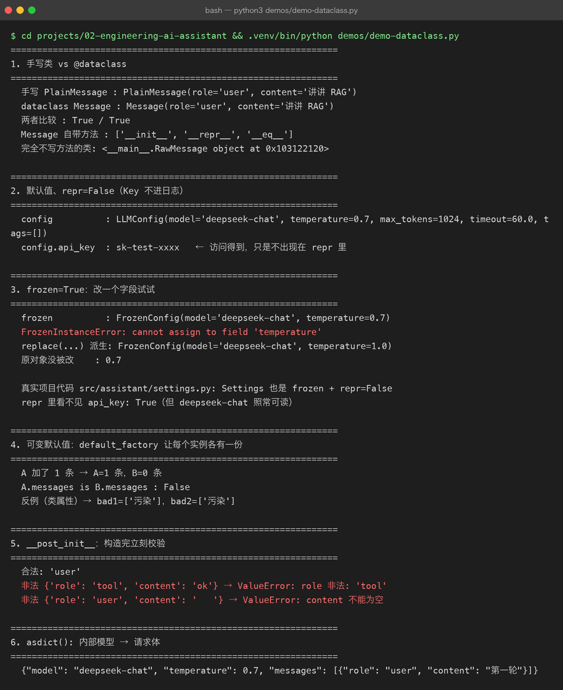
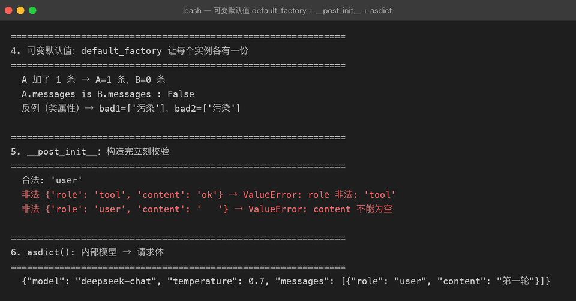

Project 02 — Chapter 04：Dataclass【数据类】
本章 ↔
src/对照（校对时补：本章练习里的类名与真实代码的对应关系）本章 Task 里让你造的三个类，在真实代码里换了名字（练习名更直白，真实名更贴合职责）：
| 本章练习 | 真实代码 | 位置 | |---|---|---| |
LLMConfig|Settings|src/assistant/settings.py| |ChatSession|Conversation|src/assistant/conversation.py| |Message（dataclass） |dict[str, str]| 沿用 OpenAI 的 messages 契约，未单独建模 |两处做得比本章练习更进一步： -
Settings用@dataclass(frozen=True)，且api_key设Field(repr=False)—— 打印对象不会泄露 Key -Conversation没有直接暴露messages字段，而是用@property返回副本 —— 外部拿到也改不动内部历史
1. 项目问题
上一章我们已经把 AI Assistant 的类型边界逐渐建立起来：
User Input
↓
Message
↓
TypedDict
↓
Assistant
↓
LLMClient
↓
Async HTTP Client例如：
from typing import TypedDict
class Message(TypedDict):
role: str
content: str然后：
messages: list[Message]这已经比裸 dict 清晰很多。
但是继续开发 Project 02，很快会遇到新问题。
例如我们的 LLM 配置：
config = {
"model": "qwen",
"temperature": 0.7,
"max_tokens": 1024,
"timeout": 60,
}调用：
config["model"]
config["temperature"]
config["timeout"]问题来了：
字段很多
↓
全部靠字符串 key
↓
容易拼错
↓
IDE 支持有限
↓
默认值分散
↓
数据和行为越来越混乱例如：
config["tempereture"]拼错一个字母，普通 Python 代码可能直到运行到这里才暴露问题。
所以这一章要解决：
如何把具有明确结构的数据组织成真正的数据对象。
2. Dataclass 是什么
Python 提供：
from dataclasses import dataclass最基本的形式：
from dataclasses import dataclass
@dataclass
class LLMConfig:
model: str
temperature: float
max_tokens: int然后：
config = LLMConfig(
model="qwen",
temperature=0.7,
max_tokens=1024,
)现在：
config.model
config.temperature
config.max_tokens而不是：
config["model"]
config["temperature"]
config["max_tokens"]3. 为什么 Dataclass 适合工程项目
一个普通 Python 类可能需要自己写：
class LLMConfig:
def __init__(
self,
model,
temperature,
max_tokens,
):
self.model = model
self.temperature = temperature
self.max_tokens = max_tokens这其实是在重复写大量样板代码。
@dataclass 可以自动帮助你生成常见的数据对象能力。
例如：
@dataclass
class LLMConfig:
model: str
temperature: float
max_tokens: int它会处理很多常见的对象样板逻辑，例如初始化、对象表示、比较等，具体行为由你使用的参数决定。
所以：
Dataclass 的核心价值不是“少写几行代码”，而是明确表达：这是一个数据对象。
4. TypedDict 和 Dataclass 的区别
这是本章最重要的知识点之一。
TypedDict
class Message(TypedDict):
role: str
content: str实际运行时它仍然是：
dict所以：
message["role"]仍然是核心访问方式。
Dataclass
@dataclass
class Message:
role: str
content: str实际创建的是：
Message(...)访问：
message.role
message.content所以可以简单理解：
TypedDict
↓
“这个 Dict 应该长什么样”
Dataclass
↓
“这个对象应该长什么样”5. Java 对比
这个地方 Java 开发者会非常容易理解。
Python：
@dataclass
class Message:
role: str
content: str可以类比 Java 中的：
public class Message {
private String role;
private String content;
}或者更接近：
record Message(
String role,
String content
) {}当然，两者并不完全相同。
Python Dataclass 更偏向：
快速构建带有结构化字段的数据对象。
Java record 则是语言层面的特殊数据载体。
6. 为什么 Project 02 需要 Dataclass
我们后面会有很多对象：
LLMConfig
Message
LLMRequest
LLMResponse
ToolCall
Document
Chunk
AgentState如果全都使用：
dict最终代码会变成：
data["model"]
data["messages"]
data["usage"]
data["tool_calls"]
data["metadata"]项目规模一大，就会非常难维护。
所以：
裸 dict
↓
TypedDict
↓
Dataclass是一种逐步增强数据表达能力的方式。
注意：
这不是“所有 dict 最后都必须变成 Dataclass”。
而是：
根据数据边界和使用方式选择合适的数据结构。
7. 第一个工程改造：LLMConfig
我们先把 Project 02 配置抽出来。
from dataclasses import dataclass
@dataclass
class LLMConfig:
model: str
base_url: str
api_key: str
temperature: float = 0.7
max_tokens: int = 1024
timeout: float = 60.0使用：
config = LLMConfig(
model="qwen",
base_url="https://example.com/v1/chat/completions",
api_key="...",
)读取：
print(config.model)
print(config.timeout)这样配置结构已经非常清晰。
8. Default Value【默认值】
Dataclass 支持：
@dataclass
class LLMConfig:
model: str
temperature: float = 0.7
max_tokens: int = 1024
timeout: float = 60.0表示：
如果调用：
config = LLMConfig(model="qwen")自动得到：
temperature = 0.7
max_tokens = 1024
timeout = 60.0这比：
config.get("temperature", 0.7)更加明确。
9. 字段顺序问题
Dataclass 有一个很典型的规则：
有默认值的字段通常要放在无默认值字段之后。
例如：
正确：
@dataclass
class LLMConfig:
model: str
temperature: float = 0.7错误思路：
@dataclass
class LLMConfig:
temperature: float = 0.7
model: str因为构造函数参数顺序会产生问题。
可以把它记成：
必填字段
↓
可选字段 / 默认字段10. Frozen Dataclass【不可变数据类】
有些配置对象创建之后不希望随意修改。
可以使用：
@dataclass(frozen=True)
class ModelConfig:
model: str
temperature: float然后：
config = ModelConfig(
model="qwen",
temperature=0.7,
)尝试：
config.temperature = 1.0会失败。
这适合表达：
创建后不应该随意改变的数据对象。
例如：
模型配置
应用常量
不可变参数但不要把 frozen=True 理解为“对象内部所有东西都深度不可变”。
它主要限制的是 Dataclass 字段自身的重新赋值。
11. Field【字段】
Dataclass 还提供：
from dataclasses import dataclass, field例如：
@dataclass
class ChatSession:
messages: list[str] = field(default_factory=list)为什么不能直接：
messages: list[str] = []因为可变对象默认值容易导致多个实例共享同一个列表对象。
推荐：
field(default_factory=list)12. 这是一个非常重要的坑
错误：
class A:
items = []这里多个对象可能共享：
A1.items
A2.items同一个列表。
Dataclass 中应该：
@dataclass
class Session:
messages: list[str] = field(default_factory=list)这样：
Session A
↓
自己的 list
Session B
↓
自己的 list联系描述：
default_factory 每次创建新对象时都会调用工厂函数，从而给每个实例生成独立的可变默认值。这样不同 Session 不会意外共享同一个 messages 列表。
13. 建立 Message 数据对象
现在我们尝试把内部业务对象做得更清晰：
from dataclasses import dataclass
@dataclass
class Message:
role: str
content: str创建：
message = Message(
role="user",
content="什么是 RAG？",
)访问：
message.role
message.content

14. 什么时候用 TypedDict，什么时候用 Dataclass
可以先建立一个工程判断表。
| 场景 | 更适合 |
|---|---|
| 外部 JSON / 字典结构 | TypedDict |
| API Response 字典 | TypedDict |
| 内部业务对象 | Dataclass |
| 配置对象 | Dataclass |
| 需要对象行为 | Dataclass |
| 需要与 JSON 直接映射 | TypedDict / Pydantic 等 |
| 需要明确字段 + 默认值 | Dataclass |
| 需要不可变配置 | Frozen Dataclass |
但这不是绝对规则。
后面进入 FastAPI 时，还会接触：
Pydantic【数据校验与模型库】
届时你会看到：
TypedDict
Dataclass
Pydantic Model三者的职责进一步区分。
15. Dataclass 可以拥有方法
它不只是数据容器。
例如：
@dataclass
class ChatMessage:
role: str
content: str
def is_user_message(self) -> bool:
return self.role == "user"现在：
message.is_user_message()这就是：
数据 + 与数据直接相关的行为
16. 但不要把所有业务逻辑塞进 Dataclass
例如不要：
@dataclass
class ChatMessage:
def call_llm(self):
...
def save_database(self):
...
def send_email(self):
...这会让一个对象承担太多职责。
应该继续保持：
Message
↓
表示消息
AssistantService
↓
处理 AI 业务
LLMClient
↓
调用模型
Storage
↓
持久化这就是：
Separation of Concerns【关注点分离】
17. Project 02 开始形成真正的分层
现在逐渐形成：
Application Layer【应用层】
↓
Service Layer【服务层】
↓
Domain / Data Model【领域 / 数据模型】
↓
Infrastructure Layer【基础设施层】
↓
HTTP / External API对于当前项目，可以简化成：
main.py
↓
assistant.py
↓
Message / LLMConfig
↓
llm_client.py
↓
httpx.AsyncClient
↓
LLM API联系描述：
用户请求进入应用层，应用层调用 Assistant Service；Service 使用明确的数据对象表达消息和配置，再通过 LLM Client 访问外部模型。这样数据结构和网络通信职责被分开，后续替换模型供应商时，上层代码不需要理解 HTTP 细节。
18. Dataclass 的自动能力
例如：
@dataclass
class Message:
role: str
content: str创建：
message = Message("user", "你好")通常可以获得比较方便的：
初始化
对象表示
字段比较例如：
print(message)会得到类似：
Message(role='user', content='你好')这在调试时非常方便。
19. __repr__ 与调试
普通类如果没有定义：
__repr__打印对象可能只看到：
<__main__.Message object at ...>而 Dataclass 默认生成更有信息量的对象表示。
这对：
Debugging【调试】
Logging【日志】
Testing【测试】特别有帮助。
20. 转换成 Dictionary
有时候我们还需要把 Dataclass 变成字典。
可以：
from dataclasses import asdict
message_dict = asdict(message)得到：
{
"role": "user",
"content": "你好"
}所以：
Dataclass
↓
asdict()
↓
dict
↓
JSON这对 AI API 调用非常有用。
21. 一个重要边界
不要认为：
asdict()就等于一个完整的 API serialization【序列化】框架。
真实项目中：
Dataclass
↓
dict
↓
JSON还可能涉及：
日期
枚举
嵌套对象
特殊类型
第三方 API Schema后面会逐步遇到更专业的：
Pydantic【数据校验与数据模型】
22. Project 02 重构示例
推荐形成：
src/
└── ai_assistant/
├── main.py
├── assistant.py
├── api_client.py
├── models.py
└── config.py其中：
models.py
from dataclasses import dataclass
@dataclass
class Message:
role: str
content: str
@dataclass(frozen=True)
class LLMConfig:
model: str
base_url: str
api_key: str
temperature: float = 0.7
max_tokens: int = 1024
timeout: float = 60.023. assistant.py
from .models import Message
from .api_client import LLMClient
class Assistant:
def __init__(self, llm_client: LLMClient):
self.llm_client = llm_client
async def generate_response(
self,
messages: list[Message],
) -> Message:
response = await self.llm_client.chat(messages)
return Message(
role="assistant",
content=response,
)这里重点观察：
以前可能是：
dict
↓
dict
↓
dict现在：
Message
↓
LLMClient
↓
Message整个业务层的数据流开始变得明确。
24. API Client 如何使用 Dataclass
例如：
from dataclasses import asdict
from .models import Message
class LLMClient:
async def chat(
self,
messages: list[Message],
) -> str:
payload = {
"messages": [
asdict(message)
for message in messages
]
}
...于是：
内部业务模型
Message
↓
asdict()
↓
dict
↓
JSON
↓
HTTP这就是：
Internal Model【内部模型】 → External Schema【外部接口结构】
25. 为什么这个边界很重要
以后不同模型供应商可能要求：
Provider A
role + content
Provider B
role + content + extra_fields
Provider C
特殊请求格式如果业务层到处直接操作：
dict供应商差异就会污染整个系统。
更好的方式：
Internal Message
↓
Adapter / Client
↓
Provider Request联系描述：
应用内部只维护自己的稳定数据模型；当请求离开应用进入第三方 API 时，由 Client 或 Adapter 将内部模型转换成具体供应商所要求的格式。这样外部 API 发生变化时，影响主要集中在边界层。
26. Java 对比这一整套设计
你可以把它映射成比较熟悉的 Java 思维：
Python Dataclass
≈
Java DTO / record
Python Type Hint
≈
Java 类型声明
Python Protocol
≈
Java interface
Python AsyncClient
≈
Java WebClient / Async HTTP Client
Python TypedDict
≈
带明确结构约束的 Map / JSON DTO但不要机械认为它们是一一对应。
最重要的是理解：
类型、数据模型、接口抽象、基础设施之间应该分离。
27. 本章知识地图
Type Hint
↓
TypedDict
↓
发现“裸 dict”仍然不够表达业务
↓
Dataclass
├── 字段
├── 类型
├── 默认值
├── frozen
├── default_factory
└── 方法
↓
Internal Model
↓
Adapter / Client
↓
External API Schema联系描述：
上一章 Type Hint 解决的是“数据类型如何表达”；这一章 Dataclass 进一步解决“业务数据如何组织成对象”。内部使用 Dataclass 建立稳定模型，跨越应用边界时再转换为供应商要求的 JSON/API Schema。这样 Project 02 开始真正具备清晰的数据边界。
28. 实战任务
Task 1：创建 models.py
建立：
@dataclass
class Message:
role: str
content: strTask 2：创建 LLMConfig
要求：
@dataclass(frozen=True)
class LLMConfig:
model: str
base_url: str
api_key: str
temperature: float = 0.7
max_tokens: int = 1024
timeout: float = 60.0Task 3：Session
创建：
@dataclass
class ChatSession:
messages: list[Message] = field(default_factory=list)测试两个 Session：
Session A
Session B确认它们的 messages 不会共享。
Task 4：API 转换
实现：
Message
↓
asdict()
↓
dict
↓
JSON观察最终 HTTP Payload。
29. 实战挑战
创建：
@dataclass
class LLMResponse:
content: str
model: str
input_tokens: int
output_tokens: int然后模拟：
response = LLMResponse(
content="你好",
model="qwen",
input_tokens=20,
output_tokens=10,
)要求：
- 可以打印对象。
- 可以访问
response.content。
- 可以转换成字典。
- 给字段添加正确类型。
- 尝试设计一个
total_tokens计算方法。
例如：
@property
def total_tokens(self) -> int:
...这里可以开始理解：
Property【属性】
30. 主动回忆
不要看正文，先回答：
Q1
Dataclass 解决什么问题？
Q2
TypedDict 和 Dataclass 的核心区别是什么？
Q3
为什么配置对象很适合使用 Dataclass？
Q4
default_factory=list 为什么重要？
Q5
frozen=True 有什么用途？
Q6
Dataclass 能不能包含方法？
Q7
为什么不应该把所有业务逻辑全部放进 Dataclass？
Q8
为什么内部 Dataclass 不应该直接等同于第三方 API Schema？
Q9
asdict() 在当前项目中有什么作用？
Q10
Java 中你会用什么东西类比 Python Dataclass？
31. 面试标准话术
问：Python Dataclass 是什么？
Dataclass 是 Python 标准库提供的一种数据类机制，用于简化具有结构化字段的数据对象定义。通过类型注解和
@dataclass，可以减少初始化方法、对象表示等样板代码，同时让数据结构更加明确。它很适合配置、DTO、内部业务模型等场景。
问：TypedDict 和 Dataclass 有什么区别？
TypedDict 主要描述字典的预期结构，运行时本质上仍然是字典；Dataclass 则定义真正的 Python 对象，通过属性访问字段。对于外部 JSON 或字典结构，TypedDict 比较自然；对于内部稳定的业务数据对象和配置对象，Dataclass 通常更合适。
问：为什么 AI 项目需要数据模型？
AI 应用的数据结构非常多，例如 Message、LLM Request、LLM Response、Tool Call、Agent State 等。如果全部使用裸字典，随着项目复杂度提高，很容易出现字段拼写错误和结构理解混乱。使用 TypedDict、Dataclass 等数据模型可以明确边界，提高可读性、IDE 支持和静态检查能力，也方便与外部 API 做转换。
32. 常见坑
坑 1：把 Dataclass 当数据库实体
Dataclass 只是 Python 数据对象工具。
它不自动意味着：
数据库表
ORM Entity
Persistence Model不要混淆。
坑 2：默认列表直接写 []
不要：
@dataclass
class Session:
messages: list[Message] = []使用：
messages: list[Message] = field(default_factory=list)坑 3：所有 dict 都转换成 Dataclass
没有必要。
例如：
一次性的临时 JSON
第三方动态 metadata
不稳定结构仍然可能继续使用字典。
坑 4：Dataclass 承担太多职责
不要让：
Message负责：
HTTP
LLM
Database
File
Agent保持：
数据对象
≠
业务服务
≠
基础设施33. Project 02 当前架构
现在已经形成：
Application
│
▼
Assistant
│
┌──────────┴──────────┐
▼ ▼
Message LLMConfig
Dataclass Dataclass
│ │
└──────────┬──────────┘
▼
LLMClient
│
▼
Async HTTP Client
│
▼
LLM API联系描述：
Assistant 负责 AI 应用逻辑；Message 和 LLMConfig 负责稳定表达业务数据；LLMClient 负责把内部数据转换成外部 API 请求；异步 HTTP 客户端负责实际网络通信。这样项目开始形成“业务逻辑 → 数据模型 → 基础设施 → 外部系统”的基本工程边界。
34. Project 02 当前进度
Project 02 — Engineering AI Assistant
Chapter 01
Async / Await
✅
Chapter 02
Async HTTP Client
✅
Chapter 03
Type Hints
✅
Chapter 04
Dataclass
✅
Chapter 05
Config / Environment
⬜
Chapter 06
Logging
⬜
Chapter 07
Testing / Debugging
⬜
Chapter 08
Packaging
⬜
Chapter 09
FastAPI
⬜现在项目已经从：
Python Script逐步变成：
Async Application
↓
Async HTTP Client
↓
Typed Data Model
↓
Structured Application35. 本章完成标准
[ ] 理解 Dataclass【数据类】
[ ] 理解 TypedDict vs Dataclass
[ ] 会使用 @dataclass
[ ] 会使用默认值
[ ] 理解 default_factory
[ ] 理解 frozen=True
[ ] 能定义 Message Dataclass
[ ] 能定义 LLMConfig Dataclass
[ ] 能定义 LLMResponse Dataclass
[ ] 能使用 asdict()
[ ] 理解内部模型 vs 外部 API Schema
[ ] 理解数据对象与业务服务的职责边界
[ ] 能解释 Dataclass 的 Java 对应思维36. 下一章
下一步进入：
Chapter 05 — Config / Environment【配置 / 环境变量】
这一章会把目前的：
LLMConfig
API Key
Base URL
Model
Timeout
Temperature继续工程化。
最终形成：
代码
↓
配置对象
↓
环境变量
↓
.env / 系统环境
↓
不同运行环境同时真正解决一个企业开发中非常重要的问题：
配置与代码分离，以及 Secret【密钥】如何安全管理。